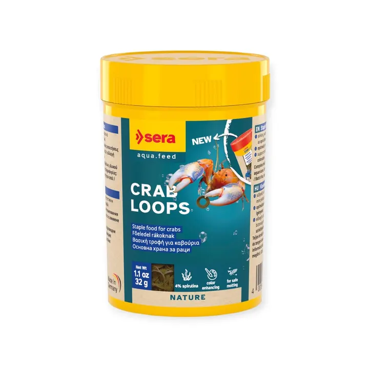

من مجموعة أكوا هافنAQUA HAVEN / THE COLLECTION
حلقات Sera Crab Loops للسلطعون – 32 جم
حلقات غارقة ثابتة في الماء بمكونات طبيعية مثل السبيرولينا ولحاء الصفصاف، يمسكها السلطعون ويأكلها على مهله بدون ما تلوّث الماء.
٣٩ ر.س
متاح ضمن اللقطة المرجعية
هذه معاينة للتصميم. الأسعار والخيارات والتوفر مرجعية وغير متزامنة؛ لا يمكن الطلب أو الدفع من هذه الصفحة.
A CLOSER LOOK
نظرة أقرب.
حلقات Sera Crab Loops للسلطعون – 32 جم — حلقات غارقة ثابتة في الماء بمكونات طبيعية مثل السبيرولينا ولحاء الصفصاف، يمسكها السلطعون ويأكلها على مهله بدون ما تلوّث الماء.
المميزات
- تركيبة متوازنة تلبّي احتياجات السلطعون الغذائية
- نسبة كالسيوم مناسبة لانسلاخ آمن
- تدعم النمو الصحي والألوان الطبيعية
- تحافظ على شكلها طويلاً — يمسكها السلطعون ويأكلها على مهله
- مع سبيرولينا ولحاء صفصاف ومخاريط الألدر
- بدون ألوان صناعية أو مواد حافظة
طريقة الاستخدام
قدّمها باعتدال مرة واحدة يومياً.
المواصفات الأساسية
- العلامة: سيرا (Sera) – ألمانيا
- نوع المنتج: طعام أساسي للسلطعون
- الحجم: 100 مل (32 جم)
- مناسب لـ: كل أنواع السلطعون والقشريات — نهري وبحري
- رقم الصنف: 00556
المكونات
مسحوق سمك، نشا ذرة، طحين قمح، سبيرولينا (4%)، خميرة بيرة، جنين قمح، كربونات كالسيوم، جامارس، كازينات الكالسيوم، طحالب بحرية، قرّاص، لحاء صفصاف، مخاريط ألدر (0.5%)، زيت سمك، MOS (0.4%)، برسيم، بقدونس، فلفل حلو، بلح البحر الأخضر، سبانخ، جزر، Haematococcus، حلبة، ثوم، شمر، يانسون. فيتامينات A، D3، E، B1، B2، C مثبّت.
التحليل الغذائي
بروتين خام 37.0% · دهون خام 9.0% · ألياف خام 3.5% · رطوبة 5.5% · رماد خام 8.5% · كالسيوم 1.8% · فوسفور 0.9%
المصدر: الموقع الرسمي لشركة sera الألمانية.